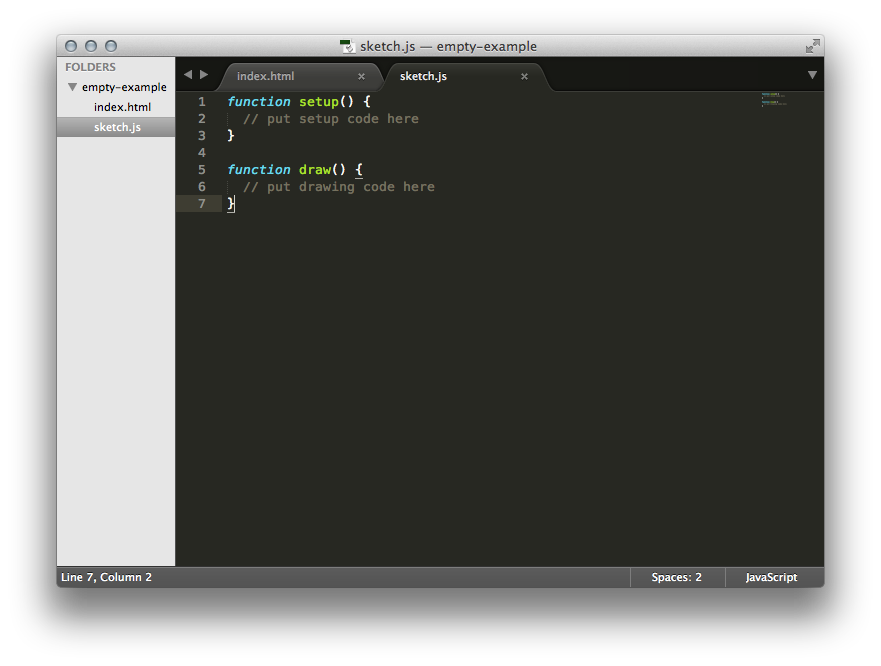
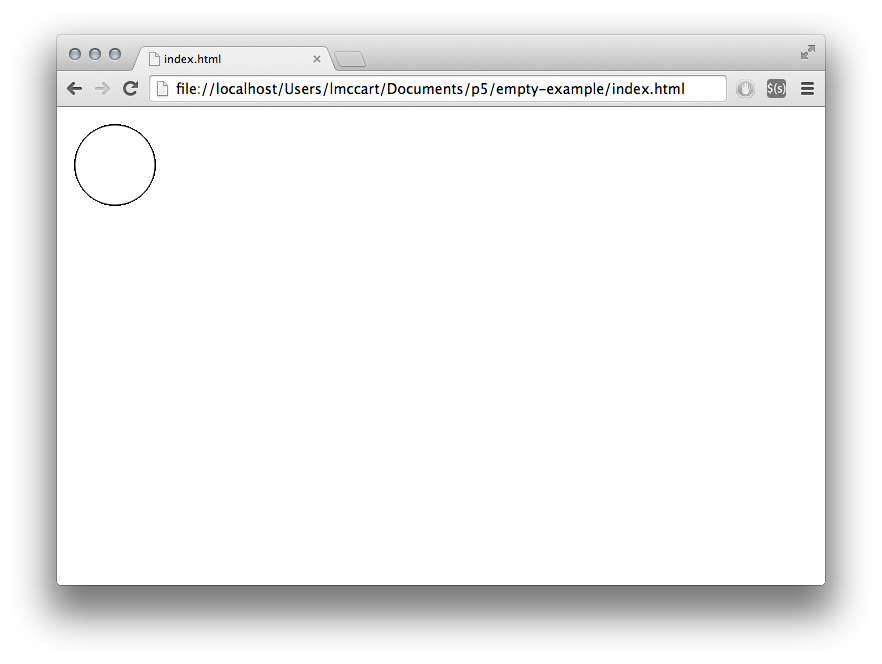
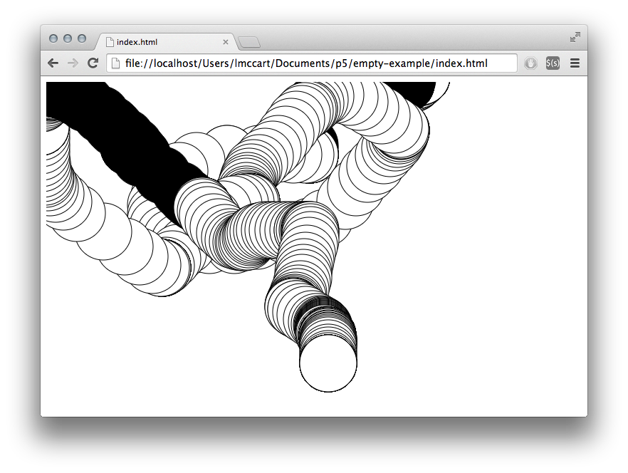

p5js新手入门
p5js这个JavaScript库设计之初就与Processing有着共同的目标：让艺术家、设计师、教育工作者和初学者等都能够进行编码，并且是为现代web重新打造。它有着完整的一套作画功能，但并不意味着你能做的只是在canvas上画画。事实上，你可以把整个浏览器都当成你的“画布”，利用插件库你可以很方便地与其他html5元素（如文本，输入框，视频，摄像头和音频）进行交互。
这儿有个p5js的演示。
接下来这篇文章会指导你搭建一个p5.js项目，以及第一次用它进行绘图。Processing的用户也许会想看下Processing迁移教程。
下载及文件配置
最简单的开始方式是使用p5.js完整下载包中附带的空例子。
如果你查看index.html文件，你会发现它链接到文件p5.js。如果你想用压缩后的（为了更快的加载速度）版本，就将链接地址改为p5.min.js。
|
|
另外，你也可以使用在线托管的p5.js。p5.js的所有版本都部署到一个CDN（内容分发网络）上了。你可以在p5.js CDN上查看它的历史版本。这时，你可以把链接地址改成：
|
|
示例的HTML文件看起来可能会是这样：
|
|
环境
你可以使用任何你喜欢的源码编辑器。下面会包含Sublime Text 2的使用指南，其他好用的编辑器有Brackets、Atom和OpenProcessing。
打开Sublime，转到File菜单并且选择Open...，然后选择你的html和js所在的文件夹。在左边栏，你应当可以看到顶部显示了文件夹的名字，跟着显示了该文件夹包含的文件列表。
单击sketch.js文件，接着它会在右边的可编辑区域打开。

为了查看画图的效果，你需要在浏览器打开index.html文件，这可以通过在文件管理器双击index.html文件，或者在浏览器地址栏输入file:///the/file/path/to/your/html达到。
首次绘画
在编辑器输入如下内容：
|
|
这行代码的意思是“画一个中点距离左边50像素、距离顶部50像素，高和宽都是80像素的圆”。
保存你的sketch.js文件，然后刷新浏览器中的页面。如果你都输入准确了，你可以看到窗口显示如下：

如果你输入有错，那么你将看不到任何东西。如果这发生了，请先确保你准确地拷贝了例子的代码：数字应当包含在圆括号中并用逗号分隔，以及应当用分号作为行的结尾。
开始编程最困难的事情之一是你必须对语法非常明确。浏览器并不是都能够弄清楚你的意图，并且它会对标点符号的位置非常苛刻。经过一些训练后你会慢慢适应它。视你所使用的浏览器而定，你可以在JavaScript “console”中查看错误信息。以Chrome为例，是在View > Developer > JavaScript Console。
接下来，我们画一个更有意思些的图。删除上例中的文本，然后试试这个：
|
|
这段代码首先会创建一个640像素宽和480像素高的绘画区域，然后会在鼠标所在的位置画白色的圆圈。当按下鼠标的按键时，圆圈的颜色会变成黑色。我们会在之后更加详细的解释这段代码。当前，运行这段代码，移动鼠标并单击来实际体验一下。

下一步
阅读Processing迁移教程以学习如何从Processing转到p5.js，以及两者的区别；
完整文档请查看reference；